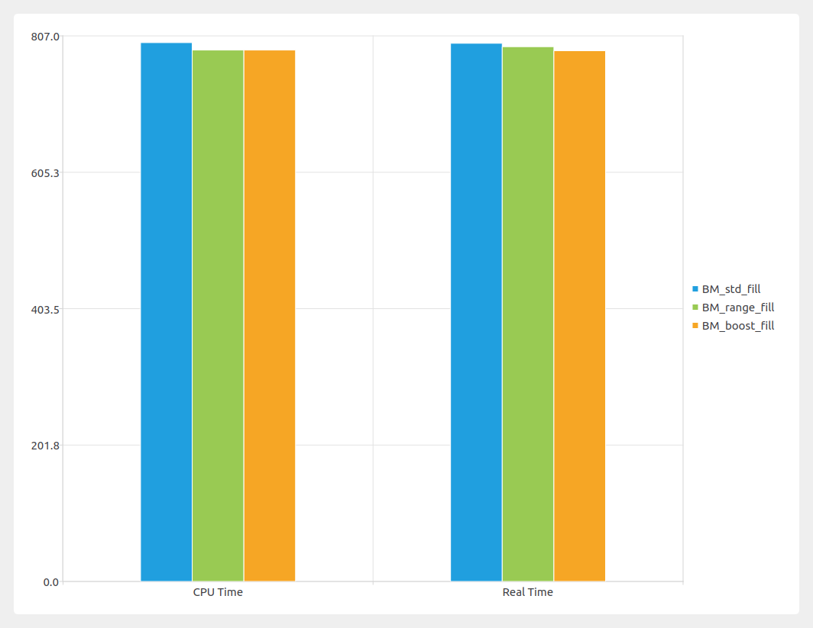
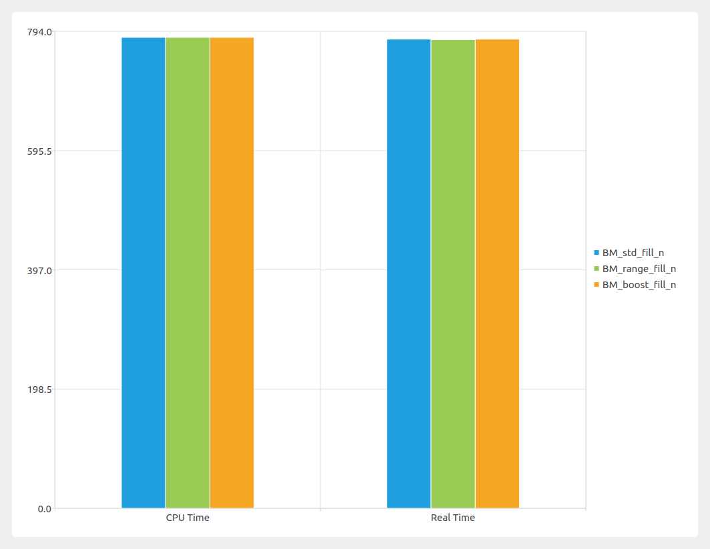
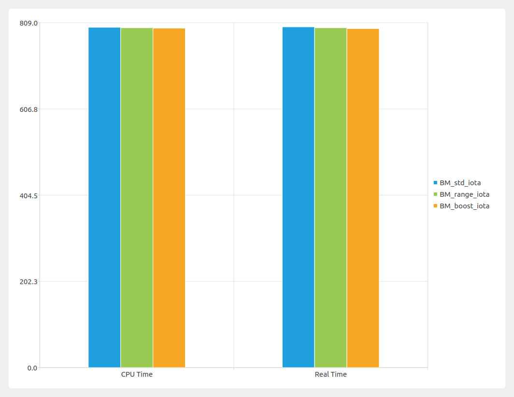
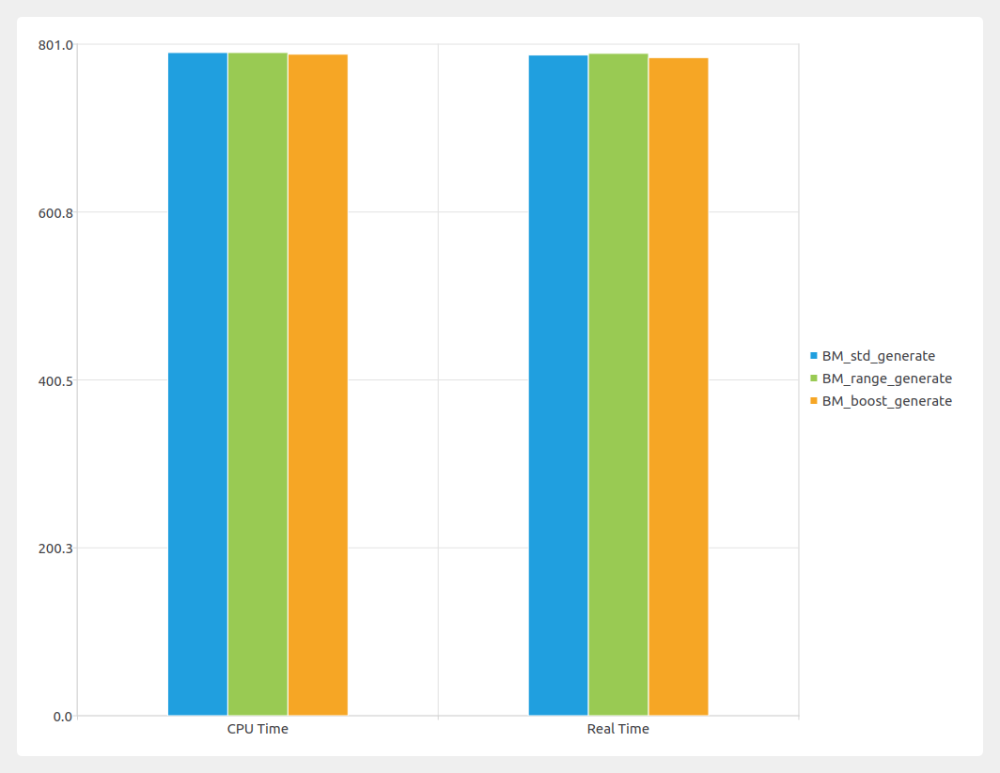
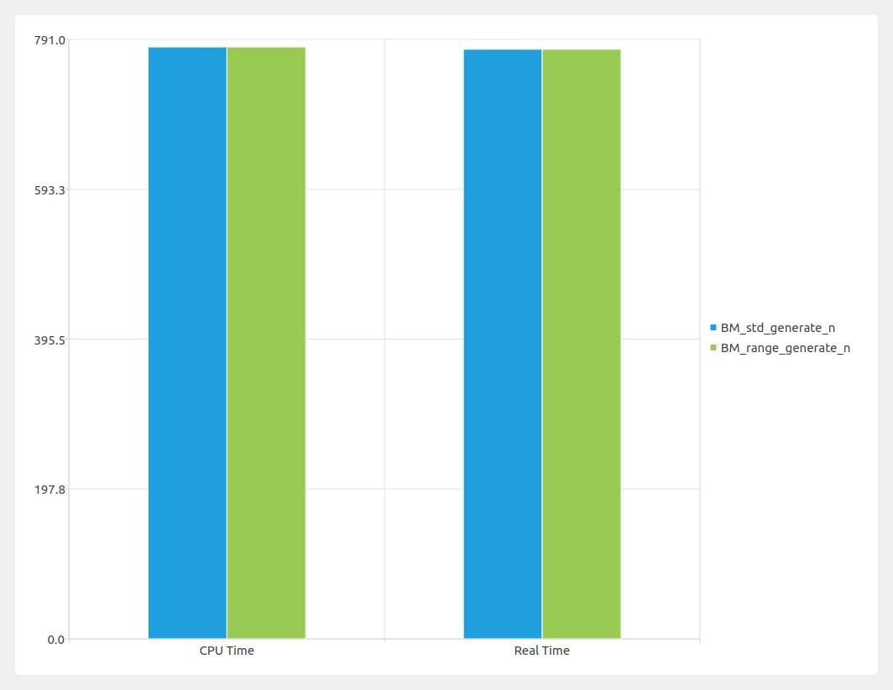

Range Generator Algorithms¶
This post is about range generator algorithims in C++ and comparision with stl classical algorithims. I will be using range-v3 and boost range library for this.
Primary motivation for ranges is to provide a simpler syntax for calling algorithims.
In good old pre C++20 or without range-v3,
std::vector<int> v {10, 2, 96}; std::sort(v.begin(), v.end());
In range-v3 library
ranges::sort(v);
Range¶
Ranges are an abstraction over Iterators. Range is basically anything that has a begin() and an end(), both begin() returns an iterator and end() returns a sentinel.
range { SomeIterator begin(); SomeSentinel end(); }
From C++ standard document n4382
A sentinel is an abstraction of a past-the-end iterator. Sentinels are Regular types that can be used to denote the end of a range. A sentinel and an iterator denoting a range shall be EqualityComparable. A sentinel denotes an element when an iterator i compares equal to the sentinel, and i points to that element.
You can detect the end of a range in two ways. - by testing the iterator itself(past-the-end) - by testing the data value at the iterator
Most classical stl algorithim has an overload which takes a range, instead of begin() and end() iterator.
Range based Generator Algorithim overloads¶
In standard c++, there are three generator algorithims.
- std::fill, std::fill_n
- std::generate, std::generate_n
- std::iota
std::fill populates a container with a value, std::generate generates a sequence of values to be populated in a container and std::iota generates a sequence of incremental values.
std::fill and std::fill_n¶
namespace std { template< class ForwardIt, class T > void fill( ForwardIt first, ForwardIt last, const T& value ); }
first -> forward iterator, usually the value of std::begin(c) or c.begin() or c.begin() + a distance value
last -> past-the-end iterator or any position after first
value -> is a value to be populated
namespace std { template< class OutputIt, class Size, class T > OutputIt fill_n( OutputIt first, Size count, const T& value ); }
fill_n takes a size instead of an iterator. Notice that fill_n takes a output iterator and fill takes a forward iterator. Output iterator doesn't support equality/inequality comparison (including operator!= used in the possible implementation of fill()) and multipass guarantee, while forward iterator does. That means output iterator can't be used for representing a range via two iterators (e.g. [first, last)) which is required by fill()'s interface.
There is another difference, fill_n return type is an output iterator. The return value is first + n.
Example
auto printFunc = [](auto x) { std::cout << x << ',';}; std::vector<int> v{0, 1, 2, 3, 4, 5, 6, 7, 8, 9}; std::fill(v.begin(), v.end(), -1); std::cout << "v after std::fill(..., -1): "; std::for_each(v.begin(), v.end(), printFunc); std::cout << '\n'; auto ret = std::fill_n(v.begin(), 3, -2); assert(ret == v.begin() + 3); std::cout << "v after std::fill_n(..., 3, -2): "; std::for_each(v.begin(), v.end(), printFunc); std::cout << '\n';
Output
v after std::fill(..., -1): -1,-1,-1,-1,-1,-1,-1,-1,-1,-1, v after std::fill_n(..., 3, -2): -2,-2,-2,-1,-1,-1,-1,-1,-1,-1,
Both range-v3 and boost range emulates this behavior.
namespace range { namespace v3 { struct fill_fn { template<typename O, typename S, typename V, CONCEPT_REQUIRES_(OutputIterator<O, V const &>() && Sentinel<S, O>())> O operator()(O begin, S end, V const & val) const { for(; begin != end; ++begin) *begin = val; return begin; } template<typename Rng, typename V, typename O = iterator_t<Rng>, CONCEPT_REQUIRES_(OutputRange<Rng, V const &>())> safe_iterator_t<Rng> operator()(Rng &&rng, V const & val) const { return (*this)(begin(rng), end(rng), val); } } } // v3 } // range
The first version of fill is straight forward. It takes both begin and end iterator, and a value. It returns end. The second version takes a range, basically a pair of begin and end.
namespace range { namespace v3 { struct fill_n_fn { template<typename O, typename V, CONCEPT_REQUIRES_(OutputIterator<O, V const &>())> O operator()(O begin, difference_type_t<O> n, V const & val) const { RANGES_EXPECT(n >= 0); auto norig = n; auto b = uncounted(begin); for(; n != 0; ++b, --n) *b = val; return recounted(begin, b, norig); } }; } // v3 } // range
The fill_n takes an output iterator and a length. It returns first + n.
Example
std::vector<int> v{0, 1, 2, 3, 4, 5, 6, 7, 8, 9}; auto ret1 = ranges::fill(v, 6); assert(ret1 == v.end()); std::cout << "v after ranges::fill(..., 6): "; std::for_each(v.begin(), v.end(), printFunc); std::cout << '\n'; auto ret2 = ranges::fill_n(v.begin(), 3, 12); assert(ret2 == v.begin() + 3); std::cout << "v after ranges::fill_n(..., 3, 12): "; std::for_each(v.begin(), v.end(), printFunc); std::cout << '\n';
Output
v after ranges::fill(..., 6): 6,6,6,6,6,6,6,6,6,6, v after ranges::fill_n(..., 3, 12): 12,12,12,6,6,6,6,6,6,6,
Boost range is very similar to range-v3, except fill_n can figure out begin iterator easily.
Example
std::vector<int> v{0, 1, 2, 3, 4, 5, 6, 7, 8, 9}; oost::range::fill(v, -1); std::cout << "v after boost::range::fill(..., -1): "; std::for_each(v.begin(), v.end(), printFunc); std::cout << '\n'; boost::range::fill_n(v, 5, -10); std::cout << "v after boost::range::fill(..., 5, -10): "; std::for_each(v.begin(), v.end(), printFunc); std::cout << '\n';
Output
v after boost::range::fill(..., -1): -1,-1,-1,-1,-1,-1,-1,-1,-1,-1, v after boost::range::fill(..., 5, -10): -10,-10,-10,-10,-10,-1,-1,-1,-1,-1,
Boost range interally uses classical stl algorithims. All three have a very similar performance.
 
iota¶
iota is very similar to fill.
auto printFunc = [](auto x) { std::cout << x << ',';}; std::list<int> l(10); std::iota(l.begin(), l.end(), -4); std::cout << "l after std::iota(..., -4): "; std::for_each(l.begin(), l.end(), printFunc); std::cout << '\n'; ranges::iota(l, 6); std::cout << "l after ranges::iota(..., 6): "; std::for_each(l.begin(), l.end(), printFunc); std::cout << '\n'; boost::range::iota(l, -10); std::cout << "l after boost::range::iota(..., -10): "; std::for_each(l.begin(), l.end(), printFunc); std::cout << '\n';
Output
l after std::iota(..., -4): -4,-3,-2,-1,0,1,2,3,4,5, l after ranges::iota(..., 6): 6,7,8,9,10,11,12,13,14,15, l after boost::range::iota(..., -10): -10,-9,-8,-7,-6,-5,-4,-3,-2,-1,
Like fill and fill_n, iota has also similar performance. 
generate and generate_n¶
Both generate and generate_n are very similar to fill and fill_n. Boost doesn't have an equivalent of n function.
Example of std library
std::vector<int> v(5); std::generate(v.begin(), v.end(), [n = 0] () mutable { return n++; }); std::cout << "v std::generate(...): "; std::for_each(v.begin(), v.end(), printFunc); std::cout << '\n'; v.clear(); v.resize(5); std::generate_n(v.begin(), 2, [n = 20] () mutable { return n++; }); std::cout << "v std::generate_n(..., 2, ...): "; std::for_each(v.begin(), v.end(), printFunc); std::cout << '\n';
Output
v std::generate(...): 0,1,2,3,4, v std::generate_n(..., 2, ...): 20,21,0,0,0,
Example of range library
std::vector<int> v(5); ranges::generate(v, [n = 10] () mutable { return n++; }); std::cout << "v ranges::generate(...): "; std::for_each(v.begin(), v.end(), printFunc); std::cout << '\n'; v.clear(); v.resize(10); ranges::generate_n(v.begin(), 3, [n = 15] () mutable { return n++; }); std::cout << "v ranges::generate_n(.., 3, ..): "; std::for_each(v.begin(), v.end(), printFunc); std::cout << '\n';
Output
v ranges::generate(...): 10,11,12,13,14, v ranges::generate_n(.., 3, ..): 15,16,17,0,0,0,0,0,0,0,
Example of boost library
std::vector<int> v(5); boost::range::generate(v, [n = 10] () mutable { return n++; }); std::cout << "v boost::ranges::generate(...): "; std::for_each(v.begin(), v.end(), printFunc); std::cout << '\n';
Output
v boost::ranges::generate(...): 10,11,12,13,14,
And finally, the performance benchmark
 
Benchmark source code is shared here https://github.com/asit-dhal/range-benchmarks.git
Image produced: https://github.com/asit-dhal/BenchmarkViewer